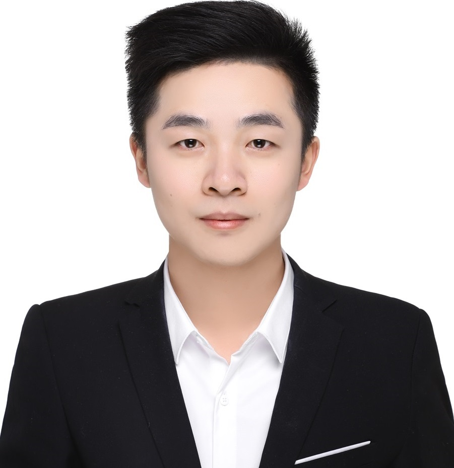

Shuo Chen (陈 硕)
Home
|  |
Shuo Chen, D.Eng.
Associate Professor, Doctoral Advisor (GUSU-YOUNG Professor)
School of Intelligence Science and Technology, Nanjing University, China
Visiting Scientist @ Imperfect Information Learning Team
Center for Advanced Intelligence Project, RIKEN, Japan
[Google Scholar, NJU-Faculty Website, RIKEN-AIP Website]
E-mail: shuo.chen.ya@foxmail.com, shuo.chen@nju.edu.cn
|
Looking for self-motivated graduate students (both Ph.D. and master) working with me. For the prospective students, please send me your resume.
2026年硕士生招生: 目前有26年保研或考研硕士名额若干（25硕士名额已招满），欢迎有相关方向科研经历、学科竞赛获奖的同学邮件联系我。
2027年博士生招生: 目前有27年入学的博士名额3位（25年博士名额已招满、26年博士名额已预约满），欢迎有顶会顶刊一作（如CCF-A、一区IEEE Trans）、学科竞赛获奖的同学提前联系我。此外也接收南大本校的本科同学进组学习与科研、南大校外的青年教师进组交流访问或应聘组内博后。
News
Nov. 2025: I was invited to be an Area Chair for ICML 2026 and an Area Chair for IJCAI 2026.
Nov. 2025: Three papers were accepted by AAAI 2026 (one is selected for oral presentation).
Oct. 2025: I was invited to be an Action Editor for Neural Network.
Sep. 2025: One paper was accepted by ICDM 2025 and two papers were accepted by NeurIPS 2025 (one is selected for spotlight presentation).
Jul. 2025: I was invited to be a Senior Area Chair for AAAI 2026 and an Area Chair for ICLR 2026.
May. 2025: Three papers were accepted by ICML 2025, one paper was accepted by TNNLS.
Feb. 2025: I was invited to be an Area Chair for NeurIPS 2025.
Jan. 2025: Two papers were accepted by TNNLS and TMM, respectively.
Dec. 2024: Four papers were accepted by AAAI 2025.
Oct. 2024: Two papers were accepted by T-PAMI and NeurIPS 2024, respectively.
Sep. 2024: I was invited to be an Area Chair for ICLR 2025, an Area Chair for CVPR 2025, and an Area Chair for AAAI 2025.
Jul. 2024: Three papers were accepted by IJCAI 2024, ECCV 2024, and Pattern Recognition.
Mar. 2024: I was invited to be an Area Chair for NeurIPS 2024.
Feb. 2024: One paper was accepted by CVPR 2024.
Feb. 2024: I was invited to be an Area Chair for ECCV 2024.
Jan. 2024: One paper was accepted by ICLR 2024.
Dec. 2023: I was invited to be an Area Chair for ICML 2024.
Nov. 2023: I serve as the Program Chair for International Workshop on Weakly Supervised Learning 2023.
Sep. 2023: Two papers were accepted by NeurIPS 2023 and Machine Learning Journal, respectively.
Aug. 2023: I was invited to be an Area Chair for ICLR 2024.
Jul. 2023: Two papers were accepted by ICCV 2023.
May. 2023: Two papers were accepted by ICML 2023 and Pattern Recognition.
Apr. 2023: I was invited to be an Area Chair for NeurIPS 2023.
Mar. 2023: I received the Japanese RIKEN BAIHO Award and the Excellent Doctoral Dissertation Award of Chinese Institute of Electronics.
Dec. 2022: I was invited to be an Area Chair for ICML 2023.
Sep. 2022: One paper was accepted by NeurIPS 2022.
Jul. 2022: One paper was accepted by TNNLS.
Apr. 2022: I was invited to be an Area Chair for NeurIPS 2022.
Education & Experience
Associate Professor, Doctoral Advisor (GUSU-YOUNG Professor), Present
School of Intelligence Science and Technology, Nanjing University, China
Research Scientist (≈Assistant Professor [Ref1,Ref2,Ref3]), October 2023 -- February 2025
Center for Advanced Intelligence Project, RIKEN National Science Institute, Japan.
Postdoc, August 2020 -- September 2023
Center for Advanced Intelligence Project, RIKEN National Science Institute, Japan.
Visiting Ph.D., November 2018 -- June 2019
Data Science Lab, The University of Pittsburgh, USA.
Algorithm Researcher, August 2015 -- November 2015
SenseTime (Beijing Department), China.
Ph.D. (D.Eng.), September 2014 -- July 2020 (integrated master's and doctoral program)
PCA-Lab, Nanjing University of Science and Technology (NJUST), China.
Honors and Awards
Municipal (GUSU) Leading Talents Fund, Science and Technology Bureau of Suzhou, 2025. Champion of D5Data's 2025 Dataset Competition (30,000 RMB bonus, advisor), Science and Technology Bureau of Hangzhou, 2025. Excellent Young Scientists Fund (overseas), National Natural Science Foundation of China (NSFC), 2024. Excellent Doctoral Dissertation Award, Chinese Institute of Electronics (CIE), China, 2023. RIKEN BAIHO Award (a.k.a. RIKEN Excellent Achievement Award, Annual Selection Rate < 1%), RIKEN National Science Institute, Japan, 2022. Excellent Doctoral Dissertation Nomination, Chinese Association for Artificial Intelligence (CAAI), China, 2021. Excellent Doctoral Dissertation Award (Annual Selection Rate < 2%), Jiangsu Province, China, 2021. National Scholarship (Two Times, Annual Selection Rate < 2%), Ministry of Education, China, 2018 and 2019. Top 1% GPA Ranking, School of Computer Science & Engineering, NJUST, China, 2014 -- 2019. The 17th Mathematical Modeling Contest for Chinese Graduate Students, Honorable Mention, Ministry of Education, China, 2015. The 2nd China Fuzzy Image Processing Contest, Honorable Mention, National Natural Science Foundation of China (NSFC), 2015. The 34th Mathematical Modeling Contest for American College Students, Honorable Mention, SIAM, USA, 2013. The 2nd Software Programming Contest for Chinese College Students, Meritorious Winner, Ministry of Industry and Information Technology, China, 2012.
Highly Selected Publications
Conference Papers (* indicates corresponding authors)
Enhancing Contrastive Learning with Variable Similarity.
Haowen Cui, Shuo Chen*, Jun Li, Jian Yang*.
Neural Information Processing Systems (NeurIPS), 2025 (spotlight).
Empowering Large Language Models for Time Series Forecasting with Patterns and Semantics.
Jialiang Tang, Shuo Chen, Chen Gong, Jing Zhang, Dacheng Tao.
International Conference on Data Mining (ICDM), 2025.
Rethinking Point Cloud Data Augmentation: Topologically Consistent Deformation.
Jian Bi, Qianliang Wu, Xiang Li, Shuo Chen, Jianjun Qian, Lei Luo, Jian Yang.
International Conference on Machine Learning (ICML), 2025.
Volume-Aware Distance for Robust Similarity Learning.
Shuo Chen, Chen Gong, Jun Li, Jian Yang.
International Conference on Machine Learning (ICML), 2025.
Modeling Inter-Intra Heterogeneity for Graph Federated Learning.
Wentao Yu, Shuo Chen*, Yongxin Tong, Tianlong Gu, Chen Gong*.
AAAI Conference on Artificial Intelligence (AAAI), 2025.
Hybrid Data-Free Knowledge Distillation.
Jialiang Tang, Shuo Chen*, Chen Gong*.
AAAI Conference on Artificial Intelligence (AAAI), 2025.
Towards Better Spherical Sliced-Wasserstein Distance Learning with Data-Adaptive Discriminative Projection Direction.
Hongliang Zhang, Shuo Chen, lei luo, Jian Yang.
AAAI Conference on Artificial Intelligence (AAAI), 2025.
Learning Generalized Residual Exchange-Correlation-Uncertain Functional for Density Functional Theory.
Sizhuo Jin, Shuo Chen, Jianjun Qian, Ying Tai, Jun Li.
AAAI Conference on Artificial Intelligence (AAAI), 2025.
Direct Distillation between Different Domains.
Jialiang Tang, Shuo Chen*, Gang Niu, Hongyuan Zhu, Joey Tianyi Zhou, Chen Gong*, Masashi Sugiyama.
European Conference on Computer Vision (ECCV), 2024.
Efficiency Calibration of Implicit Regularization in Deep Networks via Self-Paced Curriculum-Driven Singular Value Selection.
Zhe Li, Shuo Chen, Jian Yang, Lei Luo.
International Joint Conference on Artificial Intelligence (IJCAI), 2024.
Robust Similarity Learning with Difference Alignment Regularization.
Shuo Chen, Gang Niu, Chen Gong, Okan Koc, Jian Yang, Masashi Sugiyama.
International Conference on Learning Representations (ICLR), 2024.
Self-Weighted Contrastive Learning among Multiple Views for Mitigating Representation Degeneration.
Jie Xu, Shuo Chen, Yazhou Ren, Xiaoshuang Shi, Heng Tao Shen, Gang Niu, Xiaofeng Zhu.
Neural Information Processing Systems (NeurIPS), 2023.
Creative Birds: Self-Supervised Single-View 3D Style Transfer.
Renke Wang (co-first), Guimin Que (co-first), Shuo Chen*, Xiang Li, Jun Li*, Jian Yang.
International Conference on Computer Vision (ICCV), 2023.
Distribution Shift Matters for Knowledge Distillation with Webly Collected Images.
Jialiang Tang, Shuo Chen*, Gang Niu, Masashi Sugiyama, Chen Gong*.
International Conference on Computer Vision (ICCV), 2023.
Distortion and Uncertainty Aware Loss for Panoramic Depth Completion.
Zhiqiang Yan, Xiang Li, Kun Wang, Shuo Chen*, Jun Li, Jian Yang*.
International Conference on Machine Learning (ICML), 2023.
Learning Contrastive Embedding in Low-Dimensional Space.
Shuo Chen, Chen Gong, Jun Li, Jian Yang, Gang Niu, Masashi Sugiyama.
Neural Information Processing Systems (NeurIPS), 2022.
Linearity-Aware Subspace Clustering.
Yesong Xu, Shuo Chen*, Jun Li, Jianjun Qian.
AAAI Conference on Artificial Intelligence (AAAI), 2022, oral.
Industrial Style Transfer with Large-scale Geometric Warping and Content Preservation.
Jinchao Yang (co-first), Fei Guo (co-first), Shuo Chen, Jun Li, Jian Yang.
IEEE International Conference on Computer Vision and Pattern Recognition (CVPR), 2022
Large-Margin Contrastive Learning with Distance Polarization Regularizer.
Shuo Chen, Gang Niu, Chen Gong, Jun Li, Jian Yang, Masashi Sugiyama.
International Conference on Machine Learning (ICML), 2021
Understanding the Disharmony between Weight Normalization Family and Weight Decay.
Xiang Li, Shuo Chen, Jian Yang.
AAAI Conference on Artificial Intelligence (AAAI), 2020.
Curvilinear Distance Metric Learning.
Shuo Chen, Lei Luo, Jian Yang, Chen Gong, Jun Li, Heng Huang.
Neural Information Processing Systems (NeurIPS), 2019.
Understanding the Disharmony between Dropout and Batch Normalization by Variance Shift.
Xiang Li, Shuo Chen, Xiaolin Hu, Jian Yang.
IEEE International Conference on Computer Vision and Pattern Recognition (CVPR), 2019.
Data-Adaptive Metric Learning with Scale Alignment.
Shuo Chen, Chen Gong, Jian Yang, Ying Tai, Jun Li.
AAAI Conference on Artificial Intelligence (AAAI), 2019.
Adversarial Metric Learning.
Shuo Chen, Chen Gong, Jian Yang.
International Joint Conference on Artificial Intelligence (IJCAI), 2018.
Journal Papers (* indicates corresponding authors)
Metric Learning-based Subspace Clustering.
Yesong Xu, Shuo Chen*, Jun Li, Jian Yang.
IEEE Transactions on Neural Network and Learning System (TNNLS), 2025.
Contrastive Learning with Alternative Self-Supervision.
Shuo Chen, Chen Gong, Jun Li, Jian Yang.
IEEE Transactions on Neural Network and Learning System (TNNLS), 2025.
Asymptotics-Aware Multi-View Subspace Clustering.
Yesong Xu, Shuo Chen*, Jun Li, Jian Yang.
IEEE Transactions on Multimedia (TMM), 2025.
Estimating Per-Class Statistics for Label Noise Learning.
Wenshui Luo, Shuo Chen*, Tongliang Liu, Bo Han, Gang Niu, Masashi Sugiyama, Dacheng Tao, Chen Gong*.
IEEE Transactions on Pattern Analysis and Machine Intelligence (TPAMI), 2024.
Few-Shot Learning with Long-Tailed Labels.
Hongliang Zhang, Shuo Chen, Lei Luo, Jian Yang.
Pattern Recognition (PR), 2024.
Boosting Graph Contrastive Learning via Adaptive Sampling.
Sheng Wan, Yibing Zhan, Shuo Chen, Shirui Pan, Jian Yang, Dacheng Tao, Chen Gong.
IEEE Transactions on Neural Network and Learning System (TNNLS), 2023.
Fast Subspace Clustering by Learning Projective Block Diagonal Representation.
Yesong Xu, Shuo Chen*, Chunyan Xu. Jun Li*, Zongyan Han, Jian Yang.
Pattern Recognition (PR), 2023.
Boundary-Restricted Metric Learning.
Shuo Chen, Chen Gong, Xiang Li, Jian Yang, Gang Niu, Masashi Sugiyama.
Machine Learning Journal (MLJ), 2023.
Streaming Feature Selection via Graph Diffusion.
Wei Zheng, Shuo Chen*, Zhenyong Fu, Jun Li, Jian Yang.
Information Sciences (INS), 2023.
Learnable Low-Rank Latent Dictionary for Subspace Clustering.
Yesong Xu, Shuo Chen, Jun Li, Lei Luo, Jian Yang.
Pattern Recognition (PR), 2021.
Feature Selection Boosted by Unselected Features.
Wei Zheng, Shuo Chen, Zhenyong Fu, Hui Yan, Fa Zhu, Jian Yang.
IEEE Transactions on Neural Network and Learning System (TNNLS), 2021.
Autoencoder-Based Latent Block-Diagonal Representation for Subspace Clustering.
Yesong Xu, Shuo Chen, Jun Li, Zongyan Han, Jian Yang.
IEEE Transactions on Cybernetics (TCYB), 2021.
Generalization Bound Regularizer: A Unified Perspective for Understanding Weight Decay.
Xiang Li, Shuo Chen, Jian Yang.
Chinese Journal of Computers, 2021 (CCF-A).
Delta-norm based Robust Regression with Applications to Image Analysis.
Shuo Chen, Jian Yang, Yang Wei, Lei Luo, Gui-Fu Lu, Chen Gong.
IEEE Transactions on Cybernetics (TCYB), 2019.
Low-Rank Latent Pattern Approximation with Applications to Robust Image Classification.
Shuo Chen, Jian Yang, Lei Luo, Yang Wei, Kai-Hua Zhang, Ying Tai.
IEEE Transactions on Image Processing (TIP), 2017.
Professional Activities
Conference Senior Area Chair / Senior Meta-Reviewer
Conference Area Chair / Meta-Reviewer
Neural Information Processing Systems (NeurIPS), 2022--2025 International Conference on Machine Learning (ICML), 2023--2026 International Conference on Learning Representations (ICLR), 2024--2026 European Conference on Computer Vision (ECCV), 2024 IEEE/CVF Computer Vision and Pattern Recognition Conference (CVPR), 2025--2026 AAAI Conference on Artificial Intelligence (AAAI), 2024--2026 International Joint Conference on Artificial Intelligence (IJCAI), 2025
Journal Editor / Editorial Committee
Conference Reviewer
AAAI Conference on Artificial Intelligence (AAAI) International Joint Conferences on Artificial Intelligence (IJCAI) International Conference on Machine Learning (ICML) Neural Information Processing Systems (NeurIPS) International Conference on Learning Representations (ICLR) IEEE/CVF Computer Vision and Pattern Recognition Conference (CVPR) International Conference on Computer Vision (ICCV)
Journal Reviewer
Journal of Machine Learning Research (JMLR) IEEE Transactions on Pattern Analysis and Machine Intelligence (IEEE TPAMI) IEEE Transactions on Neural Networks and Learning Systems (IEEE TNNLS) IEEE Transactions on Image Processing (IEEE TIP) IEEE Transactions on Cybernetics (IEEE TCYB) Machine Learning Journal (MLJ) International Journal on Computer Vision (IJCV)
Workshop Organizer / Program Chair
|